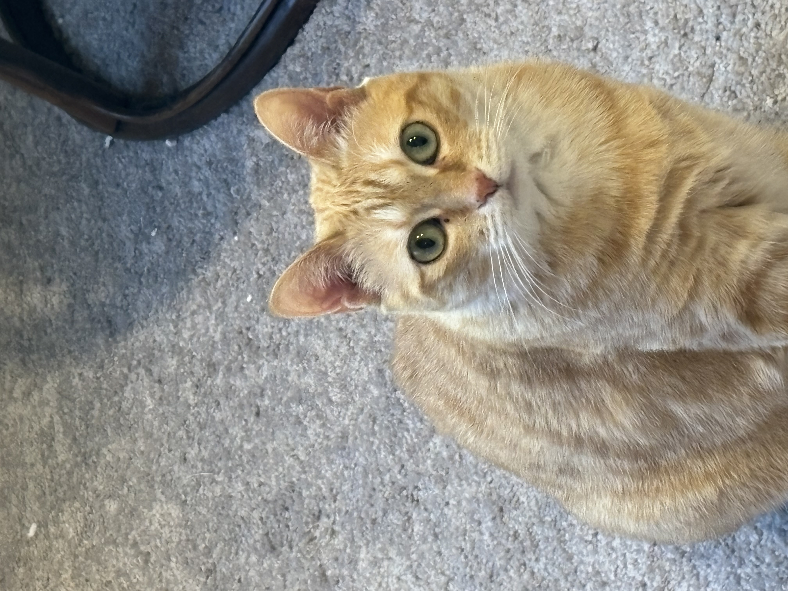
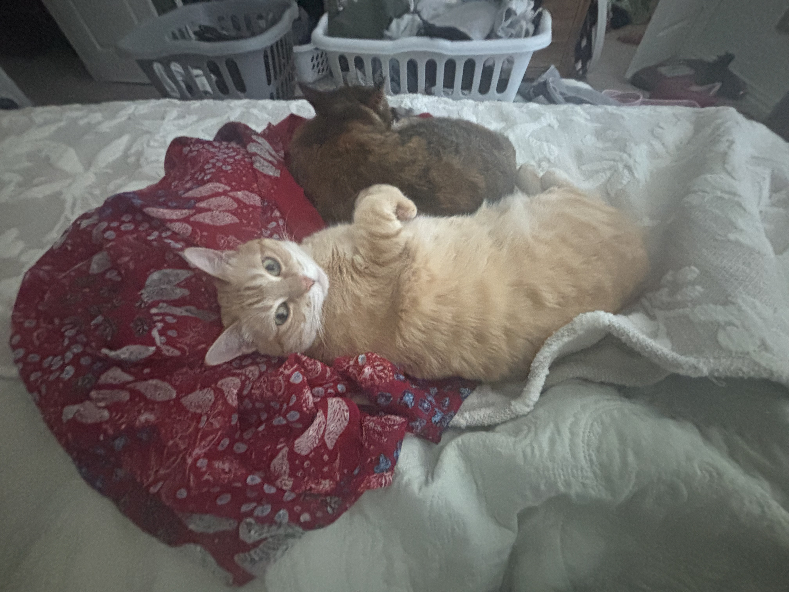
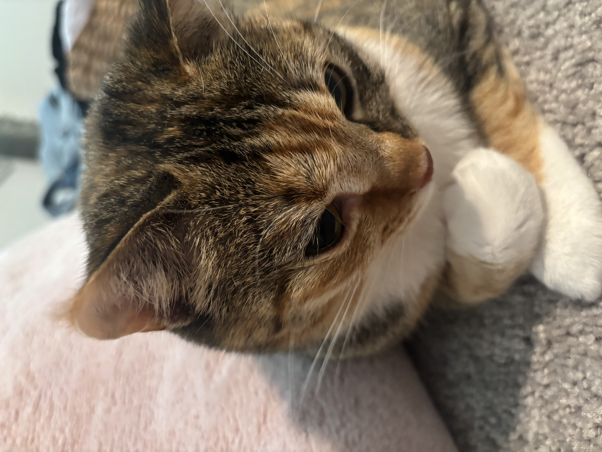

The Upward Gaze
A scholar of the floor, this amber-coated familiar peers upward with two green lanterns for eyes, as though you had interrupted some grave deliberation upon the carpet’s ancient weave. One ear tips backward in suspicion; the verdict, it seems, is still pending.

A Pact of Repose
Two conspirators at rest: one orange-furred dreamer abandoned to the velvet abyss, paws surrendered to the heavens upon a crimson tapestry, while behind it a tortoiseshell shadow keeps its coiled, secret vigil. Whatever scheme they have hatched, it will be finished only after the nap.

Wisdom in Repose
Pressed cheek-first into a cloud of rose, this striped contemplative regards the middle distance with the weary wisdom of a creature who has read every book in the house and napped through most of them. The whiskers are immaculate; the schedule, entirely its own.
Plate 1 of 3